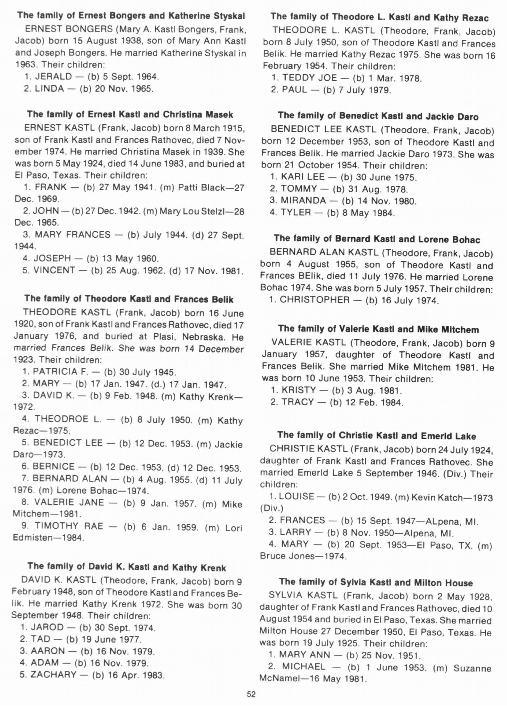

The book · The Family of Jacob Kastl
Page 52 The family of Ernest Bongers and Katherine Styskal


Transcription
The family of Ernest Bongers and Katherine Styskal
ERNEST BONGERS (Mary A. Kastl Bongers, Frank, Jacob) born 15 August 1938, son of Mary Ann Kastl and Joseph Bongers. He married Katherine Styskal in 1963. Their children:
- JERALD — (b) 5 Sept. 1964.
- LINDA — (b) 20 Nov. 1965.
The family of Ernest Kastl and Christina Masek
ERNEST KASTL (Frank, Jacob) born 8 March 1915, son of Frank Kastl and Frances Rathovec, died 7 November 1974. He married Christina Masek in 1939. She was born 5 May 1924, died 14 June 1983, and buried at El Paso, Texas. Their children:
- FRANK — (b) 27 May 1941. (m) Patti Black—27 Dec. 1969.
- JOHN — (b) 27 Dec. 1942. (m) Mary Lou Stelzl—28 Dec. 1965.
- MARY FRANCES — (b) July 1944. (d) 27 Sept. 1944.
- JOSEPH — (b) 13 May 1960.
- VINCENT — (b) 25 Aug. 1962. (d) 17 Nov. 1981.
The family of Theodore Kastl and Frances Belik
THEODORE KASTL (Frank, Jacob) born 16 June 1920, son of Frank Kastl and Frances Rathovec, died 17 January 1976, and buried at Plasi, Nebraska. He married Frances Belik. She was born 14 December 1923. Their children:
- PATRICIA F. — (b) 30 July 1945.
- MARY — (b) 17 Jan. 1947. (d.) 17 Jan. 1947.
- DAVID K. — (b) 9 Feb. 1948. (m) Kathy Krenk—1972.
- THEODROE L. — (b) 8 July 1950. (m) Kathy Rezac—1975.
- BENEDICT LEE — (b) 12 Dec. 1953. (m) Jackie Daro—1973.
- BERNICE — (b) 12 Dec. 1953. (d) 12 Dec. 1953.
- BERNARD ALAN — (b) 4 Aug. 1955. (d) 11 July 1976. (m) Lorene Bohac—1974.
- VALERIE JANE — (b) 9 Jan. 1957. (m) Mike Mitchem—1981.
- TIMOTHY RAE — (b) 6 Jan. 1959. (m) Lori Edmisten—1984.
The family of David K. Kastl and Kathy Krenk
DAVID K. KASTL (Theodore, Frank, Jacob) born 9 February 1948, son of Theodore Kastl and Frances Belik. He married Kathy Krenk 1972. She was born 30 September 1948. Their children:
- JAROD — (b) 30 Sept. 1974.
- TAD — (b) 19 June 1977.
- AARON — (b) 16 Nov. 1979.
- ADAM — (b) 16 Nov. 1979.
- ZACHARY — (b) 16 Apr. 1983.
The family of Theodore L. Kastl and Kathy Rezac
THEODORE L. KASTL (Theodore, Frank, Jacob) born 8 July 1950, son of Theodore Kastl and Frances Belik. He married Kathy Rezac 1975. She was born 16 February 1954. Their children:
- TEDDY JOE — (b) 1 Mar. 1978.
- PAUL — (b) 7 July 1979.
The family of Benedict Kastl and Jackie Daro
BENEDICT LEE KASTL (Theodore, Frank, Jacob) born 12 December 1953, son of Theodore Kastl and Frances Belik. He married Jackie Daro 1973. She was born 21 October 1954. Their children:
- KARI LEE — (b) 30 June 1975.
- TOMMY — (b) 31 Aug. 1978.
- MIRANDA — (b) 14 Nov. 1980.
- TYLER — (b) 8 May 1984.
The family of Bernard Kastl and Lorene Bohac
BERNARD ALAN KASTL (Theodore, Frank, Jacob) born 4 August 1955, son of Theodore Kastl and Frances BElik, died 11 July 1976. He married Lorene Bohac 1974. She was born 5 July 1957. Their children:
- CHRISTOPHER — (b) 16 July 1974.
The family of Valerie Kastl and Mike Mitchem
VALERIE KASTL (Theodore, Frank, Jacob) born 9 January 1957, daughter of Theodore Kastl and Frances Belik. She married Mike Mitchem 1981. He was born 10 June 1953. Their children:
- KRISTY — (b) 3 Aug. 1981.
- TRACY — (b) 12 Feb. 1984.
The family of Christie Kastl and Emerld Lake
CHRISTIE KASTL (Frank, Jacob) born 24 July 1924, daughter of Frank Kastl and Frances Rathovec. She married Emerld Lake 5 September 1946. (Div.) Their children:
- LOUISE — (b) 2 Oct. 1949. (m) Kevin Katch—1973 (Div.)
- FRANCES — (b) 15 Sept. 1947—ALpena, MI.
- LARRY — (b) 8 Nov. 1950—Alpena, MI.
- MARY — (b) 20 Sept. 1953—El Paso, TX. (m) Bruce Jones—1974.
The family of Sylvia Kastl and Milton House
SYLVIA KASTL (Frank, Jacob) born 2 May 1928, daughter of Frank Kastl and Frances Rathovec, died 10 August 1954 and buried in El Paso, Texas. She married Milton House 27 December 1950, El Paso, Texas. He was born 19 July 1925. Their children:
- MARY ANN — (b) 25 Nov. 1951.
- MICHAEL — (b) 1 June 1953. (m) Suzanne McNamel—16 May 1981.
Transcriber’s notes
In the Theodore Kastl entry the words 'married Frances Belik. She was born 14 December' are set in italic type (a typesetting quirk); reproduced in italics. Spellings as printed: 'THEODROE L.' (child 4 of Theodore), 'Frances BElik' (Bernard entry), 'Emerld Lake' (vs 'Emerald Lake' on p.51), 'ALpena, MI.', '(d.)' with period in item 2 MARY. Bernice and Benedict Lee share birth date 12 Dec. 1953 (twins, presumably). Aaron and Adam share 16 Nov. 1979.